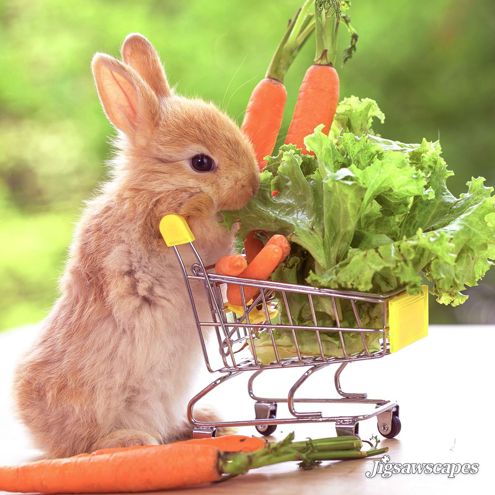

Prawidłowa dieta to podstawa zdrowia królika. Wiele osób popełnia błędy, które mogą prowadzić do poważnych problemów zdrowotnych, dlatego warto wiedzieć, co królik powinien jeść, a czego nie powinien.
Najważniejszym elementem diety królika jest siano. Powinno być dostępne w paśniku 24/7, ponieważ wspomaga trawienie i ściera zęby. Też bardzo ważną rzeczą są zioła. Najlepiej kupować takie mieszanki w których jest min. 15 rodzai ziół.
Następnym ważnym elementem jest świeża woda, najlepiej w miseczce. Królik musi mieć do niej stały dostęp.
Króliki mogą jeść różne warzywa, ale należy wprowadzać je stopniowo. Najlepiej sprawdzają się m.in. sałata rzymska, rukola, natka pietruszki czy koperek. Jeśli chodzi o owoce to powinno się je traktować jako nagrodę, lub przysmak, ponieważ owoce są bardzo kaloryczne.
Warzywa powinny być świeże i podawane codziennie, ale w rozsądnych ilościach.
Króliki nie powinny jeść słodyczy, pieczywa, produktów przetworzonych ani jedzenia dla ludzi. Takie produkty mogą bardzo zaszkodzić ich zdrowiu.
Należy także uważać na niektóre rośliny, które mogą być trujące dla królików.
Granulat może być dodatkiem do diety, ale nie powinien stanowić jej podstawy. Najlepiej wybierać taki bez zbędnych dodatków i podawać go w małych ilościach.